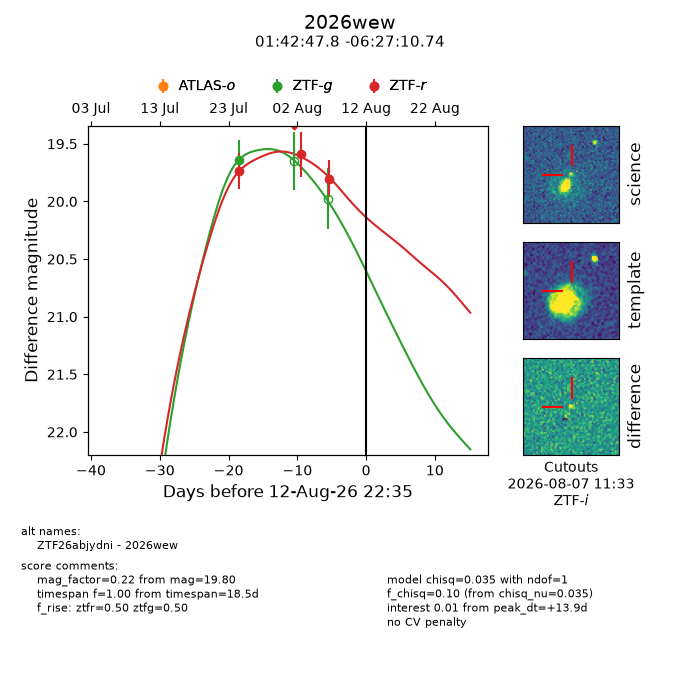
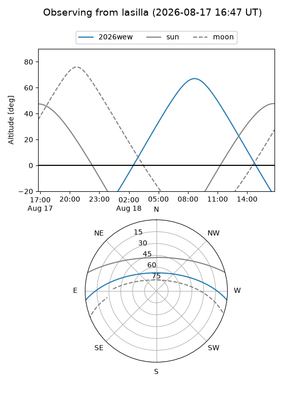
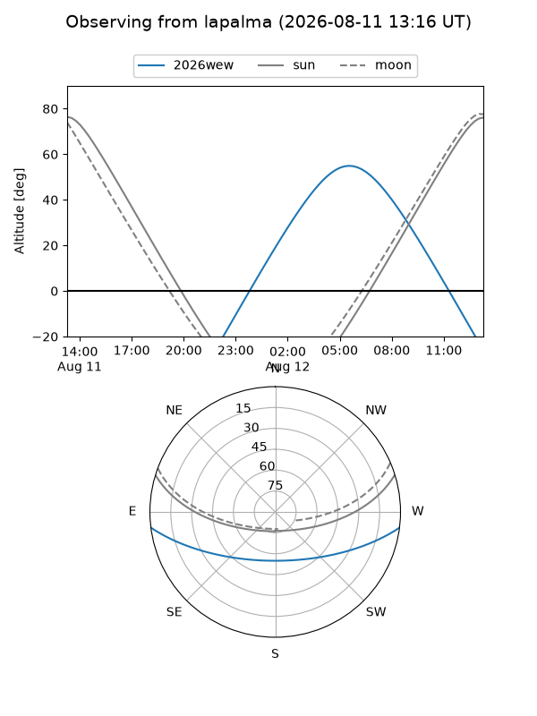
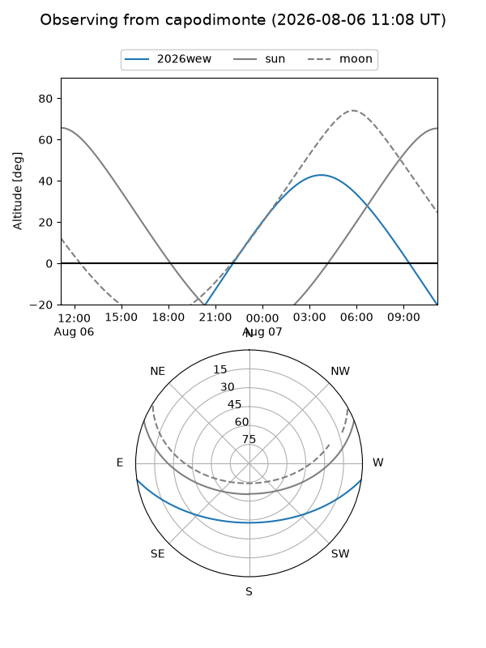
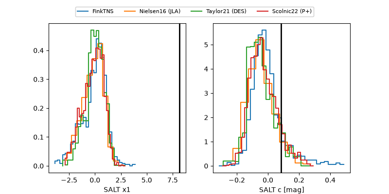

2026wew
Target 2026wew at 2026-08-12 22:38
Aliases and brokers:
FINK-ZTF: ztf.fink-portal.org/ZTF26abjydni
Lasair-ZTF: lasair-ztf.lsst.ac.uk/objects/ZTF26abjydni
ALeRCE-ZTF: alerce.online/object/ZTF26abjydni
YSE-PZ: ziggy.ucolick.org/yse/transient_detail/2026wew
TNS name: wis-tns.org/object/2026wew
Direct TNS query: direct search
alt names
ZTF26abjydni (ztf,fink_ztf)
2026wew (tns,yse)
Coordinates:
equatorial (ra, dec) = 25.6992,-6.45298
equatorial (HMS+DMS) = 01:42:47.80,-06:27:10.74
galactic (l, b) = (155.8004,-65.99134)
Flags:
TNS type: nan
peak dt: +13.9
Photometry:
last ztfg=19.64, ztfr=19.80
1 ztfg, 3 ztfr detections
Lightcurve

Visibility



Additional plots
